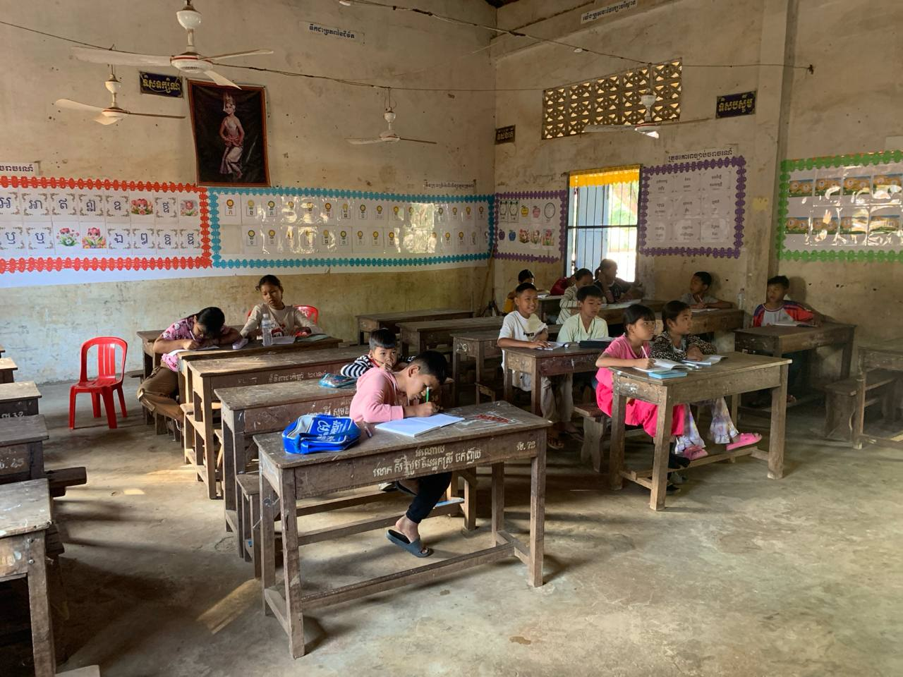

OUR CURRENT WORK
Supporting Local Schools
YBIC currently focuses on supporting children at two primary schools.

CURRENT SCHOOL
Prohot Primary School
Supporting children through English lessons, games and learning activities.
Learn More →
CURRENT SCHOOL
Preah Ponlea Primary School
Creating a supportive environment where children can practice English and learn.
Learn More →